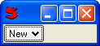

(text, menu = false, tip = false)
Creates a button labelled with text. When you click on the button, the menu is displayed using ContextMenu.
For example:
Window(#(MenuButton, "New", #("Customer", "Employee", "Contractor")))
would creates
And when you clicked on the button, you would see:
If the tip argument is provided (value should be a string), then the tip is displayed when the mouse pointer is positioned over the button.
Sends "On_" $ button-name as well as "On_" $ button-name $ "_" $ item-name to its controller when an item is clicked. For example, if Employee was chosen both On_New('Employee') and On_New_Employee() would be sent.